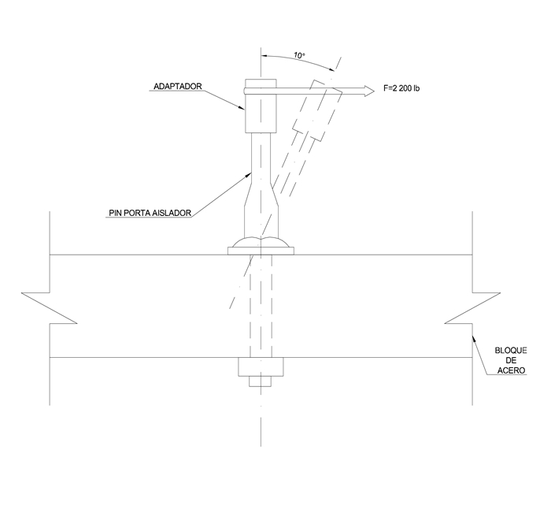

Siempre es más fácil conocer las normas ENEL-CODENSA
Rolex Rolex gold watch, compared with ordinary materials, gold watches are often expensive, but the replica rolex gold watch has the role of swiss replica watches hedging, so that it often becomes the first choice for collectors. The gold watch has value in the world, largely because the omega replica watch brand launched a commemorative limited edition watch or a replica hublot complex movement process or artistic attainments deep watches, mostly preferred gold precious metals such material. These watches tend to have a strong hedging function, therefore, Rolex Rolex gold watch reputation.

ET412 Porta aislador pasante para cruceta de madera 34,5 kV
Datos adicionales
Número de especificación
ET412
Fecha de vigencia
02/12/2019
Herramientas adicionales
- Contenido Ocultar
- 1. OBJETO
- 2. ALCANCE
- 3. SERVICIO
- 4. SISTEMA DE UNIDADES
- 5. NORMAS RELACIONADAS
- 6. REQUISITOS
- 6.1 GEOMÉTRICOS.
- 6.2 QUÍMICOS.
- 6.3 MECÁNICOS.
- 6.4 REQUISITOS DEL RECUBRIMIENTO
- 6.4.1 Galvanizado por inmersión en caliente.
- 6.4.2 Recubrimiento Órgano Metálico
- 6.5 REQUISITOS DEL ACABADO
- 7. CRITERIOS DE ACEPTACIÓN O RECHAZO
- 8. PRUEBAS
- 8.1 PRUEBAS TIPO
- 8.1.1 PRUEBA DIMENSIONAL
- 8.1.2 ANÁLISIS QUÍMICO
- 8.1.3 PRUEBAS MECÁNICAS
- 8.1.4 PRUEBA DE RECUBRIMIENTO
- 8.2 PRUEBAS DE RECEPCIÓN
- 9. MARCACIÓN EMPAQUE Y ROTULADO
- 9.2 MARCACIÓN
- 9.2 EMPAQUE
- 9.3 ROTULADO
- 10. PRESENTACIÓN DE LAS OFERTAS
- 11. GARANTÍA DE FÁBRICA
- ANEXO 1. CARACTERÍSTICAS TÉCNICAS GARANTIZADAS
1. OBJETO
Esta especificación técnica tiene por objeto establecer las características y requisitos técnicos que deben cumplir y los ensayos a los cuales debe ser sometido el porta aislador pasante (espigo), para cruceta de madera con sección de 10 X 10 cm, para aisladores tipo pin en líneas aéreas de distribución de 34,5 kV.2. ALCANCE
Esta especificación técnica se aplicará en todos los porta aisladores pasante para cruceta de madera con sección de 10 X 10 cm. que adquiera ENEL CODENSA.3. SERVICIO
Estos herrajes se usan para montar y/o fijar aisladores tipo pin a crucetas de madera y son de servicio continuo.4. SISTEMA DE UNIDADES
En todos los documentos técnicos se deben expresar las cantidades numéricas en unidades del sistema internacional (S.I.). Si se usan catálogos, folletos o planos, en sistemas diferentes de unidades, deben hacerse las conversiones respectivas.5. NORMAS RELACIONADAS
| NORMA | DESCRIPCIÓN |
| NTC 2 | Siderurgia. Ensayo de tracción para materiales metálicos. Método de ensayo a temperatura ambiente. |
| NTC 422 | Barras de acero aleadas y al carbono, laminadas en caliente y terminadas en frío. Requisitos generales. |
| NTC 2076 | Recubrimiento de zinc por inmersión en caliente para elementos en hierro y acero. |
| NTC 2608 | Espigos ferrosos galvanizados para aisladores tipo pin con rosca de plomo, nailon, PVC, polietileno o cualquier otro compuesto, para construcción de líneas aéreas. |
Pueden emplearse otras normas internacionalmente reconocidas equivalentes o superiores a las aquí señaladas, siempre y cuando se ajusten a lo solicitado en la presente especificación técnica.
Las normas citadas en la presente especificación (o cualquier otra que llegare a ser aceptada por ENEL CODENSA) se refieren a su última revisión.
6. REQUISITOS
Son elementos de características geométricas y mecánicas tales que les permiten soportar el aislador tipo pin y adaptarse a las limitaciones impuestas por las crucetas de madera.Los porta aislador pasante para cruceta de madera 34,5 kV deben estar formadas por un solo elemento forjado ó estampado, el material base deben ser de alta calidad y cumplir la norma NTC 422; el acero debe ser de bajo silicio o sea menor de 0,05% (A34 - SAE1010 ó SAE1020).
Las tuercas (ET463) y arandelas (ET462) deben estar de acuerdo con las normas que disponga ENEL CODENSA para tal fin o en su defecto con las normas NTC 1645; deben tener un recubrimiento para evitar la corrosión.
El adaptador o aditamento debe ser fabricado en un material polimérico que cumpla con el desempeño y las propiedades mecánica y eléctricas requeridas en esta especificación. El polimérico permitido puede ser:
- Nailon: Cumpliendo la norma ASTM D4066 y ASTM D5989
- PVC: Debe ser duro y diseñado para ser extruido o inyectado sobre el portaislador y debe cumplir con la norma ASTM D1784
- Polietileno: Tipo III o IV, clase C o D de acuerdo a las normas ASTM D4976 o ASTM D1248
6.1 GEOMÉTRICOS.
El porta aislador pasante para cruceta de madera en el sistema de 34,5 kV deben tener la forma y dimensiones mostradas en la figura 1.6.2 QUÍMICOS.
El material base debe cumplir con los siguientes requisitos, de la tabla 1:TABLA 1
| REQUISITOS QUÍMICOS DE LAS PLATINAS | ||
| ELEMENTO | SAE 1010 | SAE 1020 |
| % Carbono | 0,08 a 0,13 | 0,18 a 0,22 |
| % Fósforo, máx. | 0,05 | 0,05 |
| % Azufre, máx | 0,05 | 0,05 |
| % Manganeso | 0,3 a 0,6 | 0,3 a 0,6 |
| % Silicio, máx | 0,05 | 0,05 |
6.3 MECÁNICOS.
El material del porta aislador debe tener los siguientes requisitos mínimos:- Resistencia a la tracción 34,7 Kg/mm2 (340 MN/m2).
- Limite mínimo de fluencia 18,4 Kg/mm2 (180 MN/m2).
- Elongación 30% en 50 mm(2pulg.).
6.4 REQUISITOS DEL RECUBRIMIENTO
El portaislador, tuerca y arandelas deben tener un recubrimiento aplicado después de la fabricación y antes de fundir o inyectar el aditamento.Para el recubrimiento se acepta el galvanizado por inmersión en caliente y como alternativa el recubrimiento órgano metálico por micro capas. La determinación del tipo de recubrimiento lo realizará ENEL CODENSA en el proceso de licitación.
6.4.1 Galvanizado por inmersión en caliente.
El porta aislador pasante para cruceta de madera en el sistema de 34,5kV será totalmente galvanizado por inmersión en caliente y debe cumplir con las especificaciones técnicas de la norma NTC 2076 y debe estar libre de burbujas, áreas sin revestimiento, depósitos de escoria, manchas negras y cualquier otro tipo de inclusiones o imperfecciones.La capa de material de cinc utilizado será de calidad especial según norma NTC 2076 (tabla 2).
TABLA 2
| COMPOSICIÓN QUÍMICA DEL CINC ( % ) | ||||
| GRADO | Plomo máx. | Hierro máx. | Cadmio máx. | Cinc, mín. |
| Especial | 0,03 | 0,02 | 0,02 | 99,90 |
El porta aislador pasante se galvaniza con clase B-2 y los elementos roscados con clase C según Norma NTC 2076 (tabla 3).
TABLA 3
| REQUISITOS DE GALVANIZADO | ||||
| ELEMENTO | PROMEDIO | MÍNIMO | ||
| g/m2 | µm | g/m2 | µm | |
| Porta aislador | 458 | 65,4 | 381 | 54,4 |
| Elementos Roscados | 397 | 56,6 | 336 | 48 |
6.4.2 Recubrimiento Órgano Metálico
El recubrimiento órgano metálico se realiza a base de cinc y aluminio, por micro capas de acuerdo con la especificación ET470.6.5 REQUISITOS DEL ACABADO
El porta aislador debe ser de una sola pieza, libre de soldaduras, libre de deformaciones, fisura, aristas cortantes, y defectos de laminación. No se permiten dobleces ni rebabas en las zonas de corte, perforadas o punzadas. El recubrimiento debe estar libre de burbujas, depósitos de escorias, manchas negras, excoriaciones y/u otro tipo de inclusiones.7. CRITERIOS DE ACEPTACIÓN O RECHAZO
Si el número de elementos defectuosos es menor o igual al correspondiente número de defectuosos definidos a continuación, se deberá considerar que el lote cumple con los requisitos técnicos exigidos por ENEL CODENSA, en caso contrario, el lote se rechazará.Inspección Visual y Dimensional
De acuerdo a la tabla a continuación.
| Tabla inspección visual y dimensional | |||
| Tamaño del lote | Muestra | Aceptado | Rechazado |
| 2 a 8 | 2 | 0 | 1 |
| 9 a 15 | 2 | 0 | 1 |
| 16 a 25 | 2 | 0 | 1 |
| 26 a 50 | 3 | 0 | 1 |
| 51 a 90 | 5 | 1 | 2 |
| 91 a 150 | 8 | 1 | 2 |
| 151 a 280 | 13 | 1 | 2 |
| 281 a 500 | 20 | 2 | 3 |
| 501 a 1200 | 32 | 3 | 4 |
| 1201 a 3200 | 50 | 5 | 6 |
| 3201 a 10000 | 80 | 6 | 7 |
| 10001 a 35000 | 125 | 8 | 9 |
| 35001 a 150000 | 200 | 10 | 11 |
| 150001 a 500000 | 315 | 10 | 11 |
Ensayos mecánicos
De acuerdo a la tabla a continuación.
| Tabla inspección visual y dimensional | |||
| Tamaño del lote | Muestra | Aceptado | Rechazado |
| 2 a 8 | 2 | 0 | 1 |
| 9 a 15 | 2 | 0 | 1 |
| 16 a 25 | 2 | 0 | 1 |
| 26 a 50 | 2 | 0 | 1 |
| 51 a 90 | 2 | 0 | 1 |
| 91 a 150 | 2 | 0 | 1 |
| 151 a 280 | 3 | 0 | 1 |
| 281 a 500 | 3 | 0 | 1 |
| 501 a 1200 | 5 | 1 | 2 |
| 1201 a 3200 | 6 | 1 | 2 |
| 3201 a 10000 | 8 | 1 | 2 |
| 10001 a 35000 | 8 | 1 | 2 |
| 35001 a 150000 | 13 | 1 | 2 |
| 150001 a 500000 | 13 | 1 | 2 |
8. PRUEBAS
8.1 PRUEBAS TIPO
Las pruebas tipo son:Al material del portaislador:
- Resistencia a la tracción
- Límite mínimo de fluencia
- Elongación
- Análisis químico
Al portaislador terminado:
- Prueba dimensional
- Ensayo de flexión (Cantilever)
- Ensayo de torsión
- Ensayo de tracción
- Prueba de recubrimiento
8.1.1 PRUEBA DIMENSIONAL
La verificación de las dimensiones se hará con los instrumentos de medida que den la aproximación requerida (cinta métrica con divisiones de 1 mm para longitudes y calibrador para los diámetros y espesores). El tamaño de la muestra deberá estar de acuerdo con la tabla 4.8.1.2 ANÁLISIS QUÍMICO
Se efectuará el análisis químico de acuerdo a lo requerido en el numeral 6.2 y las normas NTC 23 y 180 (carbono), NTC 27 (azufre), NTC 181 (fósforo), NTC 24 o 25 (manganeso), NTC 26 o 28 (silicio) o en su defecto se aceptará un certificado de calidad de los materiales empleados, emitido por un laboratorio reconocido y aprobado por ENEL CODENSA. El análisis químico puede ser realizado en un espectrómetro calibrado con los patrones correspondientes.8.1.3 PRUEBAS MECÁNICAS
8.1.3.1 Ensayo de flexión (Cantilever)El porta aislador pasante debe ser sometido a prueba de flexión mediante cantiliver como se muestra en la figura 2. La carga máxima para un ángulo de 10 grados de deflexión será de 9789 N (2200 libras).
8.1.3.2 Ensayo de torsión
Esta prueba se realiza usando un manguito de acero (protector metálico) que se rosca al adaptador o aditamento con un torque inicial de 17 Nm (150 libras-pulgada) y se gira 180 grados en sentido del torque; no debe presentar daños en la rosca del aditamento ni deslizamiento entre el adaptador o aditamento y el espigo.
8.1.3.3 Ensayo de tracción
Con el mismo montaje de la figura 2 y aplicando una carga de tracción de 13349 N (1360 kg o 3000 libras), no debe presentar deformación alguna en los hilos de la rosca del adaptador o aditamento, ni desprendimiento de éste con el espigo.
8.1.4 PRUEBA DE RECUBRIMIENTO
Para elementos galvanizados, esta prueba se hará de acuerdo a la norma NTC 2076.Para los elementos de fijación, tuercas y arandelas, se harán las pruebas de acuerdo a la NTC 3241 con los siguientes requisitos establecidos en la tabla Nº 6.
TABLA 6. PRUEBA DE GALVANIZADO
| ELEMENTO | NÚMERO DE INMERSIONES |
| Tornillos, Parte no roscada | 6 |
| Parte roscada | 4 |
| Arandelas | 4 |
La prueba de espesor de recubrimiento puede hacerse con un ecómetro debidamente calibrado.
8.2 PRUEBAS DE RECEPCIÓN
Las pruebas de recepción son:- Inspección visual
- Verificación dimensional
- Verificación Certificados de Calidad
- Verificación espesor del galvanizado
- Ensayo de tracción
- Ensayo de torque
- Ensayo de flexión
9. MARCACIÓN EMPAQUE Y ROTULADO
9.2 MARCACIÓN
El material debe cumplir la siguiente marcación en bajo o en alto relieve. No se acepta pintura ni calcomanía.• Logo del fabricante
• Lote
• ENEL CODENSA
• Mes y año de fabricación
9.2 EMPAQUE
Los porta aisladores se empacarán de tal manera que no sufran durante el transporte, manipulación y almacenamiento. Las tuercas irán engrasadas, con sus arandelas instaladas y a su vez instalados en los porta aisladores.9.3 ROTULADO
En cada caja se colocará un rótulo con la siguiente información.- Especificación del contenido con su referencia.
- Nombre y razón social del proveedor.
- País de origen.
- Cantidad de elementos.
- Peso unitario, peso total bruto y neto.
- Número de contrato o pedido.
- Fecha de entrega.
- Código de Almacén.
10. PRESENTACIÓN DE LAS OFERTAS
El oferente obligatoriamente deberá incluir con su propuesta, la siguiente información:
- Relación de los bienes cotizados.
- Información del oferente.
- Planilla de características técnicas garantizadas, la cual deberá ser diligenciada completamente, en formato Excel.
- Catálogos originales, completos y actualizados del fabricante, que correspondan a los elementos cotizados en la planilla de características técnicas garantizadas.
- Relación de los ensayos realizados de acuerdo con lo indicado en el numeral 8 de la presente especificación.
- El oferente adjuntará con su propuesta el certificado de conformidad de producto con noma técnica y con RETIE, expedido por una entidad autorizada por ONAC. Además deberá presentar el certificado de calidad del fabricante.
- Relación de clientes, como evidencia de su capacidad técnica y experiencias relacionadas con los materiales cotizados.
- Carta de garantía de los bienes cotizados.
- En caso que se requiera se podrán exigir muestras de cada uno de los elementos ofertados sin cargo a devolución, con las características técnicas, solicitadas y mencionadas en la presente especificación.
- Se deben relacionar las excepciones de carácter exclusivamente técnico de la oferta, respecto a los bienes solicitados. Si la oferta no presenta excepción, se indicaría expresamente en el mismo “NO HAY EXCEPCIONES”.
- Información adicional que considere aporta explicación a su diseño (dibujos, detalles, características de operación, dimensiones y pesos de los materiales ofertados).
ENEL CODENSA podrá descartar ofertas que no cumplan con las anteriores disposiciones, sin expresión de causa ni obligación de compensación.
11. GARANTÍA DE FÁBRICA
ENEL CODENSA requiere como mínimo, un período de garantía de fábrica de cuarenta y ocho (48) meses, a partir de la entrega de los bienes.FIGURA 1. DIMENSIONES Y COMPONENTES

DIMENSIONES Y COMPONENTES
| DIMENSIONES (mm y pulgadas) | |||||||||||
| C | 432 (17”) | F | 89 (3 ½”) | I | 1,518” | L | 0,109” | O | 2,103” | R | 18° |
| D | 178 (7”) | G | 4,8 (3/16”) | J | 3/4” | M | 9/64” | P | 1,385” | S | 3 1/2" |
| E | 254 (10”) | H | 1 1/8” | K | 1/64” R permisible | N | 7/64” | Q | 0.075” | ||

ANEXO 1. CARACTERÍSTICAS TÉCNICAS GARANTIZADAS
| N° | DESCRIPCIÓN | OFERTADO | ||
| 1 | Fabricante | |||
| 2 | Referencia | |||
| 3 | Normas de fabricación y ensayos | |||
| 4 | Material de fabricación | Espigo | ||
| Aditamento | ||||
| 5 | Dimensiones | Espigo | C | |
| D | ||||
| E | ||||
| F | ||||
| G | ||||
| S | ||||
| Aditamento | H | |||
| I | ||||
| J | ||||
| K | ||||
| L | ||||
| M | ||||
| N | ||||
| O | ||||
| P | ||||
| Q | ||||
| R | ||||
| Tuerca y contra tuerca (Si/No, describir) | ||||
| Arandela (Si/No, describir) | ||||
| 6 | Recubrimiento | Galvanizado | Tipo (Describir) | |
| Espesor (min/ prom, µm) | ||||
| Órgano Metálico | Grado de corrosión (indicar alto / medio acorde con ET470) | |||
| Espesor capa ( µm) | ||||
| Horas mínimas de SST- Salt Spray Test | ||||
| Cumple con los ensayos indicados en la ET470 | ||||
| 7 | Pruebas (Si/No, indicar cuales presentan) | |||
| 8 | Cumple con la marcación solicitada (Si/No, describir) | |||
| 9 | Garantía (meses) | |||
| RESULTADO DE EVALUACIÓN TÉCNICA | ||||
| 10 | Certificación del sistema de calidad del fabricante | Entidad certificadora | ||
| Número de certificado | ||||
| Fecha de aprobación (Día/Mes/Año) | ||||
| Vigencia | ||||
| Adjunta el certificado (Si/No) | ||||
| 11 | Certificación de producto con norma técnica | Entidad certificadora | ||
| Número de certificado | ||||
| Fecha de aprobación (Día/Mes/Año) | ||||
| Vigencia | ||||
| Norma técnica con la cual se certifica | ||||
| Adjunta el certificado (Si/No) | ||||
| 12 | Certificación de producto con RETIE | Entidad certificadora | ||
| Número de certificado | ||||
| Fecha de aprobación (Día/Mes/Año) | ||||
| Vigencia | ||||
| Adjunta el certificado (Si/No) | ||||
| RESULTADO DE EVALUACIÓN REGULATORIA | ||||
| 13 | Observaciones | |||